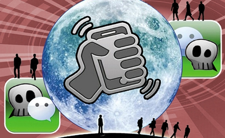
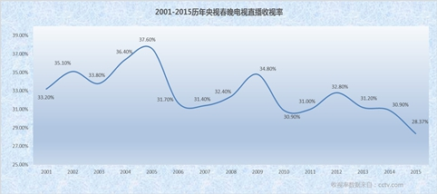

微信“摇一摇”，会从哪些角度“摇动”电视？
相比较之前在陌生人社交领域所形成的卓越成就以及毁誉参半的口碑而言，今年春节时新增加的“摇一摇电视”，让微信的“摇一摇”功能瞬间就在媒体圈引爆，而且几乎众口一词称“摇一摇成了春晚救星”、“社交电视不再是个伪命题”、“双屏互动即将大热”，一时间“摇一摇电视”似乎成为了拯救春晚收视率以及社交电视概念的救世主……但是这里面有许多似是而非的概念。
在进入正题之前先讨论个别的：这些年来春晚真的已经沦落到没人看以至于需要被微信“摇一摇”来拯救的地步了么？
单纯从感觉上回答这个问题恐怕不够理性，好在央视每年都会在自己的官方网站上公布相关的数据，因此我们首先摆出数据讲道理：
从表中我们可以发现，自2001年起至2014年，收视率基本都在32%上下波动，而近两年出现下滑，其中很重要的一个原因是由于视频网站同步直播的加入，用户可以在PC、手机或平板电脑的屏幕上同步观看直播节目，也可以错时回看或点播，从而造成了当晚电视收视的分流：据行业相关人士提供的数据显示，在春节长假七天中春晚节目在电视端重播收视率涨了3个点，网络点播收视率基本上是去年的5倍，而七天总体多屏总收视率比去年增长了5.44个百分点。
客观数据可以告诉我们，应该说这样的一台晚会，无论如何也还没沦落到需要给自己找个救星的地步。
再进入正题：微信除了通过春晚，获取到更多关注与使用以外，在“摇一摇”之后，微信会给我们曾经熟悉的“电视”带来什么样的影响？
从内容源头上看，微信的涉足很可能会改变节目编排以及推广的思路
相较目前在编排上还是以单向为主的电视节目而言，微信的涉足使得电视制作人看到了互动电视节目的曙光。
近些年电视圈里一直流行一个论调，即必须把已经投奔互联网的用户再拉回到客厅中来，其中可行的方法之一就是要让用户特别是年轻用户参与到节目中以增强他们对于电视节目的粘性，在这里先不论用户是不是抛弃电视投奔了互联网以及是不是能够拉得回来，首先我们得承认结合了用户的互动后电视节目能够更加精彩，唯一的瓶颈只是一直苦于没有合适的交流通道；而微信作为一个巨无霸量级的国民应用，已经有了非常广泛的用户基础，这使得在电视节目的制作过程甚至播出过程中随时获取用户的反馈从而决定节目的走向已经成为可能；而在另一方面，有了微信的介入后，电视节目的推广方式也变得更加灵活多样，在节目中最吸引人的环节中合理的设置互动内容，吸引更多的用户在微信朋友圈进行主动分享，从而起到的推广效果会更加的精准且有效。
对于智能电视应用及相关手机应用而言， 市场还没做大“狼就来了”？
社交电视所蕴含的巨大的商业价值，是任何行业相关人士都不会忽略的，当然首先把握到这种需求的并不是微信（当年还没这玩意儿呢），而是各大电视台。
从上个世纪九十年代开始电视台就已经使用了当时最先进的社交手段来满足各位电视观众的参与感，比较著名的包括足球之夜的16897168声讯电话（反正我一次都没能打进去过），以及后来在湖南卫视各档节目中不停被口播做广告的“呼啦”手机客户端等。而在进入三网融合时代之后，伴随着智能电视的崛起相当一批的智能电视及周边应用也瞄准了这个市场，例如依托自身智能电视平台的联想“乐主播”，以及依托手机平台的酷云TV等，这些产品都期望通过社交电视的形式为用户提供更好的直播电视观看体验以便提升用户对于自身产品的粘性。
但我们也可以注意到，这些应用也存在一个短板，那就是受到自身平台限制所带来的用户数量发展相对缓慢，但这也正是微信的摇一摇功能的优势所在：只需要打开微信中的摇一摇界面，晃动手机便可轻松获取和当前观看电视节目相关的信息甚至是红包等福利，门槛相比较之前需要下载应用或者新选购智能电视可谓低了很多，因此，“摇一摇”很可能会因此将之前的社交电视应用或功能直接给OTT掉，还在试图通过智能电视以及手机App的方式来进行社交电视应用开发的团队，是否需要重新审视一下自己的产品思路了呢？
对于“中国特色浓重”的电视收视率调研市场，“摇一摇”会从技术角度重新洗牌么？
在收视率调研市场上，传统方式在中国已经运作多年且一直是央视-索福瑞（CSM）独大，但其只有区区6.11万户样本家庭加之复杂的统计计算方式也一直引人诟病且争议不断，在这里我们先不讨论现有的收视率计算方式是否合理（毕竟这件事情已经复杂到可以写一本书了），在这里我们更该关注的是“摇一摇”所带来的价值：不但比现有调研样本大得多的样本群体，而且数据几乎不会被污染，真实性能够得到保证。
微信所具有的真实社交关系对于样本家庭的定义已经不在话下，除此之外精准的用户地理位置也为采样贡献了足够多的信息，更重要的是现在我们终于可以在将收视率在时间和节目细节上的精准程度再上一个台阶：我们甚至可以知道一台晚会中到底哪几个时间段用户看电视精神更集中，哪个节目不受观众欢迎以及哪个主持人更为用户所喜爱，所有的这些我们想要知道的信息都可以不露声色的融合在微信“摇一摇”的反馈数据中。有了更大更多更精准的原始数据，“摇一摇”已经能够从技术角度打破现行电视收视率统计的坚冰。
写在最后的话：微信“摇完陌生人”又开始“摇电视”，到底想干嘛？
被称作第一代“YP神器”的摇一摇功能，在微信最初的推广工作上居功至伟，现在又当起了腾讯进军电视节目市场的排头兵。与上次不同，这次利用的是人民群众的另外一个出于本能的爱好：占便宜。小小的红包里面虽然只有几块钱，但却让“摇一摇”这个动作更加的深入人心，也让微信“连接一切”的野心暴露无遗。
坦率说，这次的推广手段依然是传统套路：利用春晚做事件营销，先给点甜头拉来用户养成习惯然后再形成平台效应；而这次这个平台的搭建，腾讯想要插手的是整个电视节目生态。和传统意义上的进军客厅不同，腾讯利用微信的平台属性绕过了电视机硬件以及电视台，直接碰触到的是向电视产业输血的广告主们：用户在“摇一摇”电视的时候，也直接把自己同广告商连接在了一起，广告商可以直接将营销费用（其实就是红包）精准的投递到用户身上，满足了商家作为广告主让广告价值最大化的需求之外，还精准的监控到每笔营销费用所带来的转化率，而这正是广告行业多年以来梦寐以求的事情……如果这件事情让腾讯做成，很可能又将带来整个电视广告产业的一次洗牌。

西安新掌趣信息科技有限公司是一家新兴的移动互联网公司。
我们年轻且富有梦想，并致力于将传统广播电视行业与移动互联网进行深度结合，开启广播电视行业双屏互动新时代。
我们一方面同腾讯紧密合作、一方面同众多广播电视台紧密合作。我们汇聚了互动策划、技术研发、运营分析和等各领域的优秀人才，主创核心人员均来自腾讯、阿里巴巴、新浪、华为、中国移动等国内尖端互联网公司及知名企业，组成一只务实的精锐之师。我们拥有一支在互联网与传统广播电视行业具备丰富经验的管理团队，和一群心怀梦想，富有激情的年轻人。始终坚持以用户体验和价值为核心价值，依靠先进的技术和创意，同各方联手打造新一代网络电视广播媒体互动新天地。
- 名称：西安新掌趣信息科技有限公司
- 地址：西安市高新区科技五路20号京发大厦7层
- 邮编：710075
- 电话：029-88867788
- 邮箱：support@holdfun.cn
Copyright © 2014 - holdfun.cn All Rights Reserved
西安新掌趣信息科技有限公司 版权所有